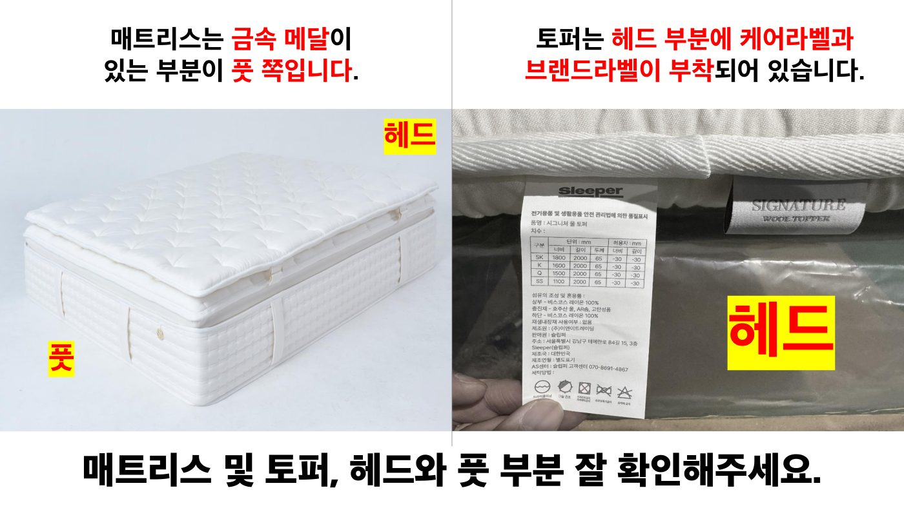
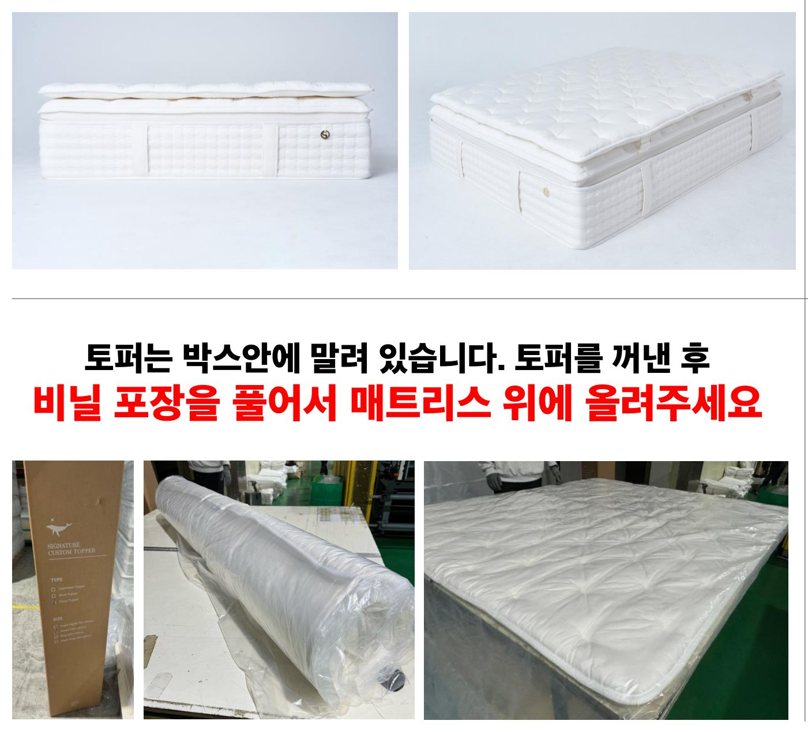
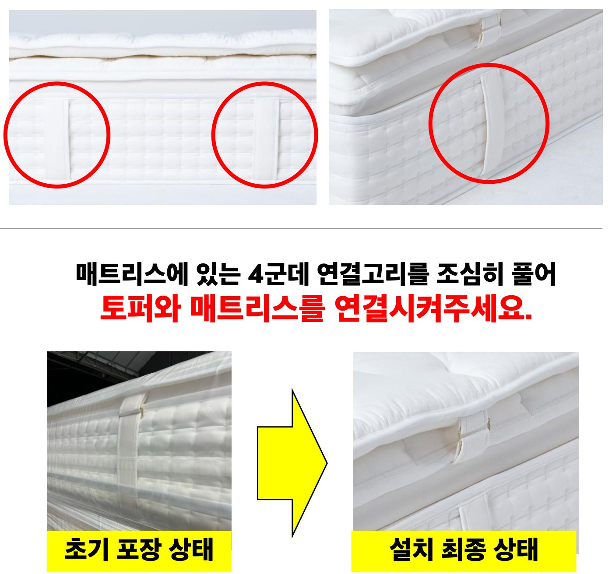
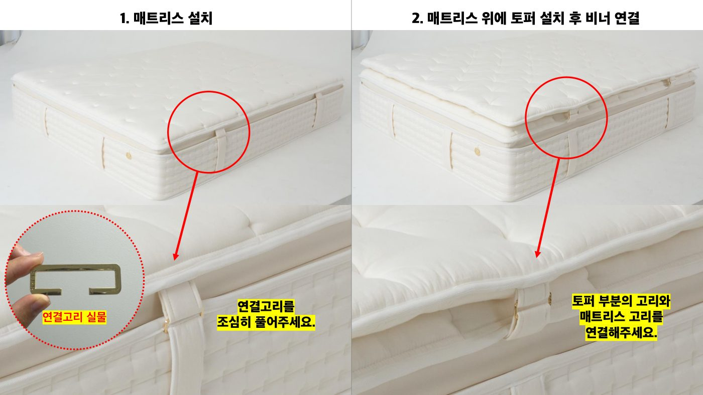
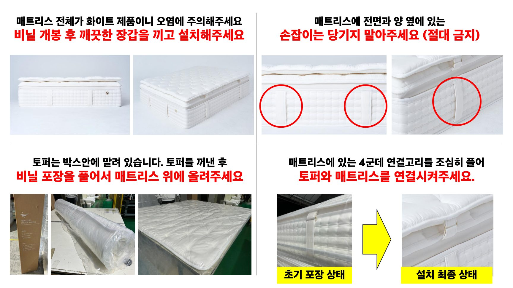

설치 전 주의사항
매트리스와 토퍼는 화이트 컬러로, 한 번 오염되면 복구가 어렵습니다. 아래 4가지는 반드시 지켜 주세요.
⛔ 절대 금지
매트리스 측면의 손잡이는 절대 당기지 말 것. 내부 구조가 손상될 수 있습니다.
⚠️ 오염 방지 필수
- 비닐 개봉 후 깨끗한 장갑을 착용한 상태로 설치
- 전면과 양 옆 비닐만 개봉, 바닥 비닐은 마지막에 제거
- 토퍼를 바닥에 직접 내려 두지 말 것
방향 확인
매트리스와 토퍼의 헤드/풋 방향을 잘못 두면 연결고리가 어긋나 다시 작업해야 합니다.
매트리스
토퍼
💡 한 번에 확인하기
매트리스의 금속 메달과 토퍼의 라벨이 서로 반대편에 위치하도록 두면 자동으로 헤드/풋이 맞습니다.
설치 단계
-
매트리스를 침대 프레임 위에 올리기
비닐 전면·측면을 개봉하고 장갑을 낀 상태로, 매트리스를 침대 프레임 위에 정위치로 올립니다.

📍 금속 메달이 침대의 풋 방향에 오도록 정렬 -
박스에서 토퍼 꺼내기
토퍼는 박스 안에 말려 있습니다. 꺼낸 후 비닐 포장을 풀어 매트리스 위에 올립니다.

1 / 2 
2 / 2 📍 케어라벨·브랜드라벨이 침대의 헤드 방향에 오도록 정렬 -
매트리스의 연결고리 4개 풀기
매트리스 네 모서리(상단 좌·우 / 하단 좌·우)에 있는 연결고리를 조심히 풀어 둡니다.

⚠️ 천천히고리를 무리하게 잡아당기면 봉제선이 뜯어질 수 있습니다.
-
토퍼와 매트리스 연결
토퍼 모서리의 고리와 매트리스 고리를 네 모서리 모두 비너로 연결합니다.
상단 좌 1 상단 우 1 하단 좌 1 하단 우 1 -
마무리 확인
토퍼를 가볍게 끌어당겨 4점 모두 단단히 연결되었는지 확인합니다. 시트·패드를 씌우면 완료.
✓ 인수 체크- 토퍼가 매트리스보다 튀어나오지 않는지
- 비너 4개 모두 잠겨 있는지
- 표면에 오염·눌림 자국이 없는지
최종 인수 체크리스트
- 매트리스 손잡이 손상 없음
- 토퍼 4점 비너 모두 잠김
- 오염 / 스크래치 없음
- 비닐 폐기 (고객에게 보여드린 후)
- 고객님께 손잡이 사용 금지 안내
📐 전체 원본 도면 (PDF)
각 단계 위 이미지가 작거나 자세히 보고 싶을 때는 아래 페이지를 클릭하여 확대하세요. (총 4 페이지)
